两年前，我写过一篇关于在H100上超越cuBLAS性能的博客。那其实是我踏入GPU世界的第一步。没想到它会走红并引发一场小革命。我很高兴看到好几个人为Blackwell做了同样的事：
gau-nernst写了一篇出色的tcgen05博客。
Daniel Vegamyhre用MXFP8达到了99%。
Paul Chan用BF16击败了cuBLAS。
Ali和Modular团队也做到了。
Daniel和Paul甚至将Hilbert曲线用到了他们的Blackwell调度器中。
有一段时间，我觉得没必要再写一篇。但现在我准备好写续篇了：带着新的想法，而且这次我们有比Hilbert曲线更好的东西！
以下是我们在GB300节点上使用CUDA 13.1得到的最终数据：
所有代码均可在Github此处获取。
我们将首先为GB300从头构建一个NVFP4 GEMM，一如既往地使用纯CUDA和内联PTX，不依赖任何框架。我们将首先关注经典的8192 x 8192 x 8192形状，性能比cuBLAS高出4.7%。我们还会展示其他一些形状的结果。
我们选择NVFP4，因为它比其他dtypes更具挑战性。随着tensor-core指令速度提升，流水线的其余部分难以跟上喂给它们的速度。这正是我们展示最极致GPU性能技巧的地方。此外，整个内核100% 由Claude生成（后文详述）。
我希望这能激励人们掌握自己的内核，而不是将其视为黑盒。一切不过是又一段代码。
两年前，我写过一篇关于在H100上超越cuBLAS性能的博客。那其实是我踏入GPU世界的第一步。没想到它会走红并引发一场小革命。我很高兴看到好几个人为Blackwell做了同样的事：
gau-nernst写了一篇出色的tcgen05博客。
Daniel Vegamyhre用MXFP8达到了99%。
Paul Chan用BF16击败了cuBLAS。
Ali和Modular团队也做到了。
Daniel和Paul甚至将Hilbert曲线用到了他们的Blackwell调度器中。
有一段时间，我觉得没必要再写一篇。但现在我准备好写续篇了：带着新的想法，而且这次我们有比Hilbert曲线更好的东西！
感谢阅读Pranjal的Substack！免费订阅以接收新文章并支持我的工作。
以下是我们在GB300节点上使用CUDA 13.1得到的最终数据：
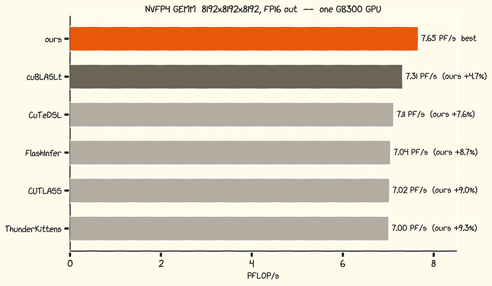
所有代码均可在Github此处获取。
我们将首先为GB300从头构建一个NVFP4 GEMM，一如既往地使用纯CUDA和内联PTX，不依赖任何框架。我们将首先关注经典的8192 x 8192 x 8192形状，性能比cuBLAS高出4.7%。我们还会展示其他一些形状的结果。
我们选择NVFP4，因为它比其他dtypes更具挑战性。随着tensor-core指令速度提升，流水线的其余部分难以跟上喂给它们的速度。这正是我们展示最极致GPU性能技巧的地方。此外，整个内核100% 由Claude生成（后文详述）。
我希望这能激励人们掌握自己的内核，而不是将其视为黑盒。一切不过是又一段代码。
NVFP4即NVIDIA的4位浮点格式。每个矩阵值以4位E2M1格式存储：
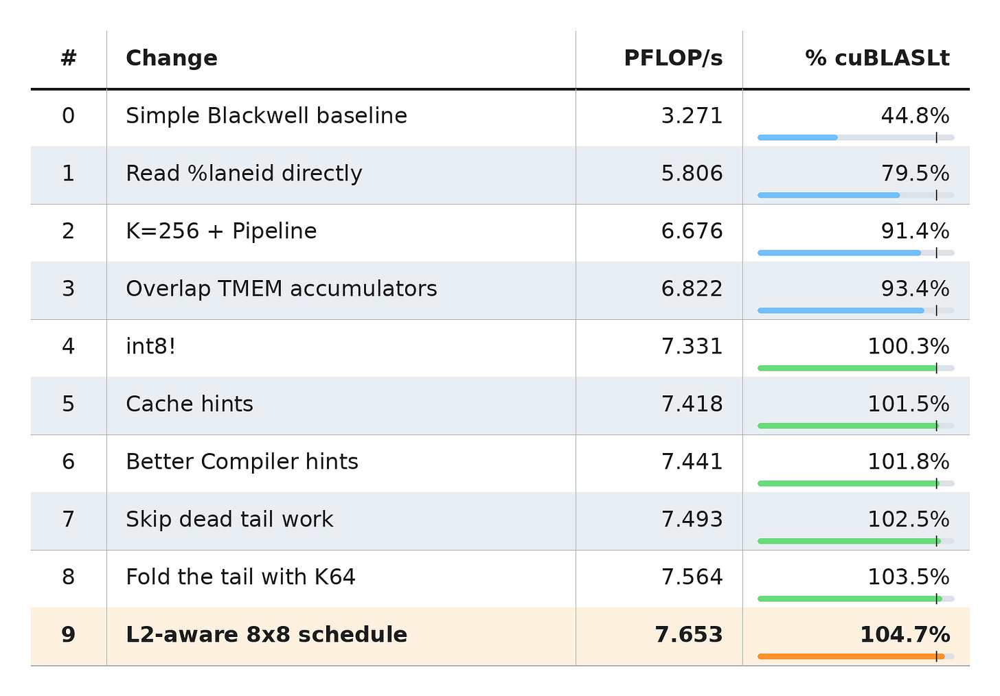
1个符号位
2个指数位
1个尾数位
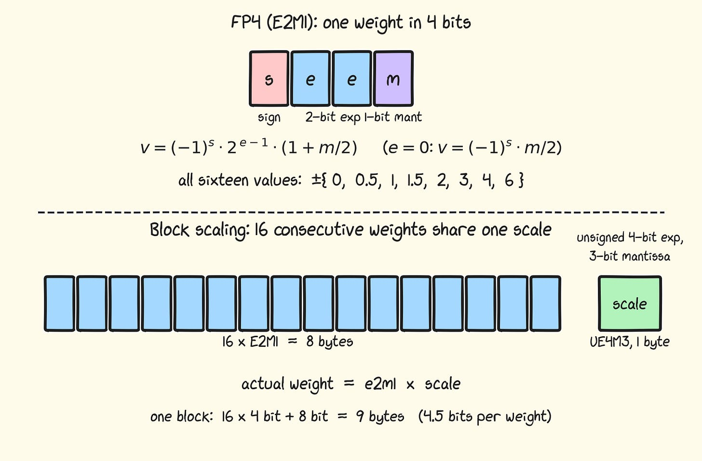
可表示的数值大小为0、0.5、1、1.5、2、3、4和6。这个范围本身对于有用的张量来说太小了，因此沿K方向每16个值共享一个8位UE4M3缩放因子（将每个值乘以该数即可得到反量化值）。
这使得每个值的有效存储成本为4.5位。
从原始BF16值中得到这些非常简单：取每个16值块中的最大绝对值，除以6（E2M1的最大值），即得到缩放因子。然后每个值按该缩放因子进行归一化以适配FP4。这样可确保我们设置的缩放因子使得每个值至多为6。
Blackwell可以直接使用这种格式。tcgen05.mma指令读取E2M1值及其缩放因子，在张量核心内部应用缩放，并累加到FP32。无需单独的反量化循环。
基本的Blackwell kernel与Hopper有很大不同。Blackwell张量核心比Hopper张量核心更加“异步”。Hopper线程需要分配多个寄存器来保存张量核心操作的输出。在操作运行期间，线程可以自由地做其他事情，但由于缺乏空闲寄存器，实际上很难做任何有用的事情。
Blackwell将这些累加器移入独立的SM上内存：张量内存（Tensor Memory，TMEM），从而让CUDA线程可以自由地执行其他工作。
我不会在这里重新讲解每条Blackwell指令。上面链接的文章已经很好地完成了这项工作。相反，我会先快速开发一个Blackwell风格的原型，其中已经具备若干重要细节，同时仍与cuBLAS存在较大差距。本节读起来更像是对这些基础技术的一次快速通关，之后我们会更有趣。
我通常这样可视化内核：将其视为数据流，展示每个操作数的驻留位置以及它如何流经HBM、shared memory、tensor cores、Tensor Memory和registers。
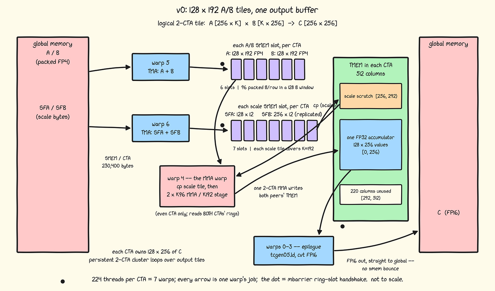
每个CTA有224个线程，即7个warp。Warp 5和6将数据加载到shared memory队列，warp 4消费它们并发出MMA，warp 0-3将MMA结果存储到global memory。
Warps Role
----- --------------------------------------------------------------------------------
0-3 Read FP32 accumulators from TMEM, convert to FP16, and store
4 Copy scale factors from SMEM to TMEM and issue every MMA (which outputs to TMEM)
5 Load A and B into shared memory with TMA
6 Load A and B scale factors into shared memory with TMA与Hopper一样，每个warp使用mbarrier与其他warp同步，并使用Shared Memory或Tensor Memory（新）交换数据。
GB300引入了比GB200版本更大的MMA shape。K = 64 --> 96，增大了50%，但在最大shape下消耗相同的cycle数。
M N K Cycles Performance at 2 GHz
--- --- -- ------ --------------------
256 128 64 64 10.0 PFLOP/s
256 128 96 78 12.3 PFLOP/s
256 256 64 128 10.0 PFLOP/s
256 256 96 128 15.0 PFLOP/s因此，我们自然需要使用尽可能大的tile size，即256 x 256。
Blackwell有一种特殊的方式执行2-CTA tensor core指令，原生支持更大的tile size（与Hopper相比，Hopper只是对操作数进行multicast）。这使同一cluster中2个SM上运行的2个CTA能够协作执行更大的tensor core操作。这使我们的tile size从128 x N增加到256 x N。
tcgen05.mma.cta_group::2.kind::mxf4nvf4.block_scale.scale_vec::4X
[%0], %1, %2, %3, [%5], [%6], acc;在此模式下，读取A和B所需的shared memory在两个CTA之间拆分，最后输出也由两个CTA各分一半：
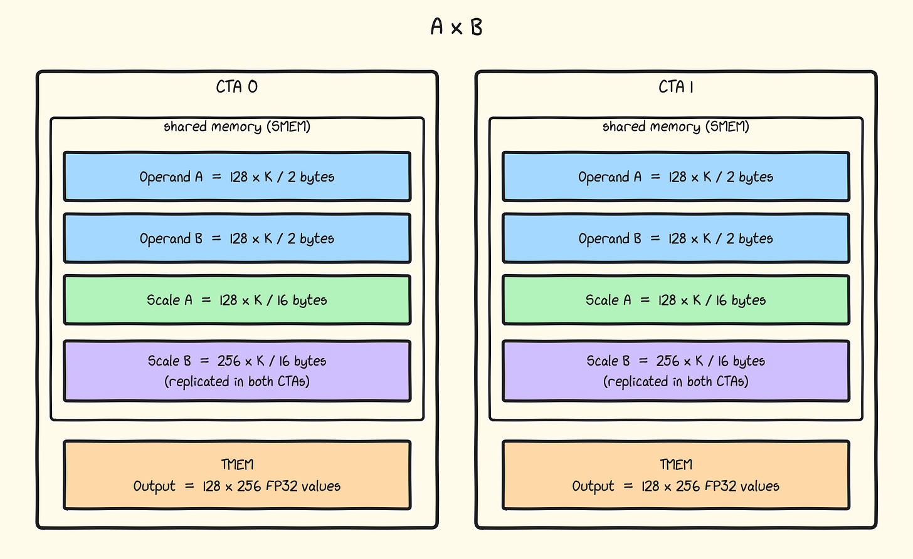
请注意，每个load在2个SM之间均等分片，但B矩阵的scale factors需要复制（我推测是为了更快的硬件访问）。
其工作方式如下：两个CTA运行相同的两个生产者角色，并以192值阶段步进K（打包两个K=96 MMA，接下来将介绍）：
// Runs in both CTAs.
int m_cta = tile_m + 128 * cta_rank;
int n_cta = tile_n + 128 * cta_rank;
if (warp_id == 5 && (threadIdx.x % 32) == 0) {
for (int k = 0; k < K; k += 192) {
wait(ab_free[ab_slot]);
if (cta_rank == 0)
expect_tx(ab_ready[ab_slot],
2 * (128 * 96 + 128 * 96)); // 2 CTAs x (A + B)
tma_load(a_smem[ab_slot], (m_cta, k)); // packed: 128 x 192
tma_load(b_smem[ab_slot], (n_cta, k)); // packed: 128 x 192
ab_slot = (ab_slot + 1) % 6;
}
}
if (warp_id == 6 && (threadIdx.x % 32) == 0) {
for (int k = 0; k < K; k += 192) {
wait(sf_free[sf_slot]);
if (cta_rank == 0)
expect_tx(sf_ready[sf_slot],
2 * (128 * 12 + 256 * 12)); // 2 CTAs x (SFA + SFB)
tma_load_4d(sfa_smem[sf_slot], (m_cta, k)); // logical: 128 x 12 scales
tma_load_4d_multicast(
sfb_smem[sf_slot],
(tile_n, k, cta_rank),
both_ctas); // logical half: 128 x 12
sf_slot = (sf_slot + 1) % 7;
}
}注意：对于Scale B，每个CTA加载3,072字节槽位的一半，并将其多播给对端CTA。这比让每个CTA加载整个槽位快0.3%。
NVFP4每个字节打包两个值，因此每个128 x 192 FP4 tile是一次 128 x 96字节的TMA加载。缩放因子按128 x 12的组加载，每行12个元素。接下来看看为什么12是合理的，以及4d TMA是怎么回事。
MMA通过SMEM描述符读取A和B，但其缩放因子必须位于TMEM中。以下指令将它们复制到那里：
tcgen05.cp.cta_group::2.32x128b.warpx4 [%0], %1;
HBM缓冲区使用与cuBLASLt相同的标准VEC16缩放布局；没有内核特定的重新打包。我们向TMA将该缓冲区描述为四个维度：外层块、四个K缩放值组成的一组、该组内部的缩放值，以及128个连续行字节。因此，一个3 x 4 x 128字节的盒子会落入32x128b.warpx4所期望的逻辑128 x 12 SMEM tile。关于这种特殊swizzling的更多细节，请参考gau-nernst的tcgen05博客：它不会直接影响我们的算法。
对我们来说更重要的计算是，一个K=96 MMA每行消耗六个缩放字节。如果我们一次暂存两个MMA，且tcgen05.cp移动512字节的tile：
A缩放值：128行x 6 x 2字节 = 1,536字节 = 3个cp tile B缩放值：256行x 6 x 2字节 = 3,072字节 = 6个cp tile
将2个MMA分组，是为了充分利用tcgen05.cp的512字节复制范围：这是最优选择。
K=192的TMA tile size直接来自这一运算。
由此产生的三个SFA副本和六个SFB副本恰好占据36个TMEM列。
Warp 4同时消耗一个scale槽位和一个A/B槽位，并以192值阶段推进K：
if (cta_rank == 0 && warp_id == 4 &&
(threadIdx.x % 32) == 0) {
wait(acc_free, d_parity);
for (int k = 0; k < K; k += 192) {
wait(sf_ready[sf_slot]);
copy_3_sfa_and_6_sfb_tiles_to_tmem(sf_slot);
commit(sf_free[sf_slot]);
wait(ab_ready[ab_slot]);
mma_k96(k);
mma_k96(k + 96);
commit(ab_free[ab_slot]);
sf_slot = (sf_slot + 1) % 7;
ab_slot = (ab_slot + 1) % 6;
}
commit_multicast(acc_ready, both_ctas);
}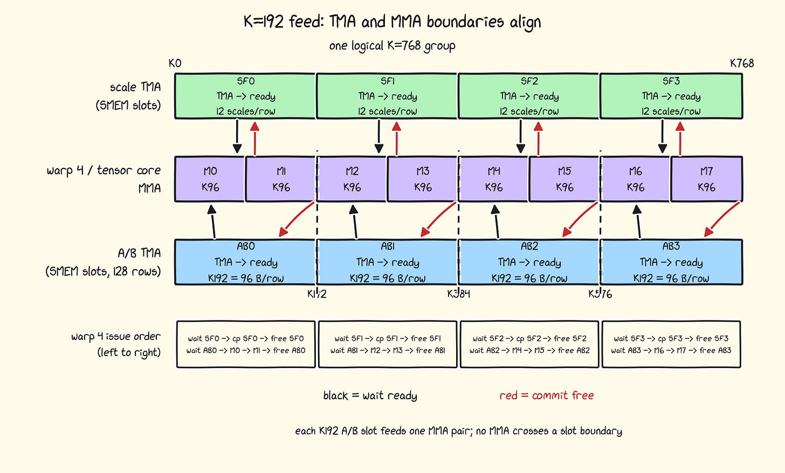
图中展示的tile size选择是合理的：一切都对齐得很好。
几个有趣的要点：
两个commit调用都是异步的tcgen05.commit操作，携带一个mbarrier到达。它们不会立即发生，而是在相应的cp或mma调用完成后发生。
注意，单个warp同时发出tcgen05.cp和tcgen05.mma。根据PTX的tcgen05内存一致性规则，tcgen05.cp到tcgen05.mma是显式流水线化的。我们不必等待mma完成后再发出另一个会覆盖同一TMEM空间中scale因子的cp。这是安全的，因为mma之后的commit会隐式执行tcgen05.fence::before_thread_sync，将两个MMA排序到随后的复制之前。这建立了张量核心所遵循的顺序。
对于256 x 256的tile，每个CTA在TMEM中接收一个128 x 256的FP32输出，即256列。我们使用一个位于 [0, 256) 列的累加器缓冲区，以及位于 [256, 292) 列的一个可复用36列scale区域。TMEM的512列中其余220列未使用（但之后会派上用场）。
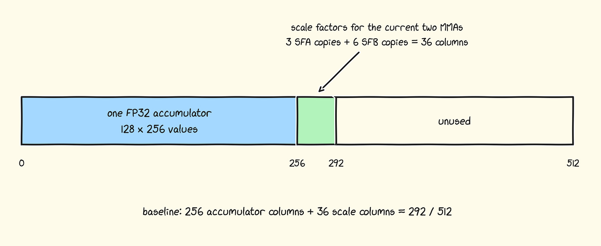
Warp 0-3负责排空操作。每个warp拥有32行，而两个CTA在将整个tile从TMEM加载到寄存器后，共同向acc_free提供到达信号：
if (warp_id< 4) {
wait(acc_ready);
for (int band = 0; band < 8; ++band) {
float acc_regs[32]; // 32 registers per lane
tmem_load_x32(tmem_base + 32 * band, acc_regs);
if (band == 7) {
wait_for_tmem_loads();
arrive(acc_free);
}
store_fp16(acc_regs, output_row, 32 * band);
}
}因此，重要的循环不是一个生产者接一个消费者，而是三个独立的握手同时进行：TMA填充SMEM环形缓冲区，某个warp搬运scales并启动MMA，epilogue只有在将累加器全部从TMEM加载出来后才返回累加器。
如果觉得这太难理解，不妨再看一遍这个数据流图：
多个warp角色需要warp中恰好一个线程。例如，warp 4看起来像这样：
if (cta_rank == 0 && warp_id == 4 && threadIdx.x % 32 == 0) {
run_mma_role();
}这样写非常自然。然而，如果改为直接读取 %laneid特殊寄存器，速度会惊人地提升77.5%（什么？！）
__device__ __forceinline__ uint32_t lane_id() {
uint32_t lane;
asm("mov.u32 %0, %%laneid;" : "=r"(lane));
return lane;
}
if (cta_rank == 0 && warp_id == 4 && lane_id() == 0) {
run_mma_role();
}这两个条件在数学上是等价的，但ptxas并不会以相同的方式编译它们。我在全部五个单lane位置做了同样的替换。它使kernel从3.271提升到5.806 PFLOP/s！
要理解这一差距，了解uniform寄存器会有所帮助。普通的 GPU寄存器为warp中的32个lane各保存一个独立的值。uniform寄存器为整个warp保存一个值，uniform数据通路可以用它计算一次，而不用在全部32个lane中重复相同的工作。
我们的SMEM描述符、TMEM地址、屏障地址和循环状态都是 warp-uniform的。理想情况下，ptxas会让它们走这条更便宜的路径。从 threadIdx.x（一个每线程值）开始检查，会让编译器丢失部分这种证明（尽管它可以做得更好！）。
然后它会插入R2UR SASS指令，将值从常规寄存器复制到统一寄存器，再加上跟踪哪些通道（lanes）处于活动状态的指令。直接使用%laneid形式能被更好地识别：这个版本少了135条R2UR指令，SASS也短了848行。
到目前为止，每个A/B TMA tile覆盖128 x 192的形状。我们的下一个目标是将其增加到128 x 256。
192与K=96配合得很好。但如果我们将内部维度设为128字节宽，TMA操作可以更高效。然而这会导致tile不均匀，并且需要非常小心地进行屏障调整：
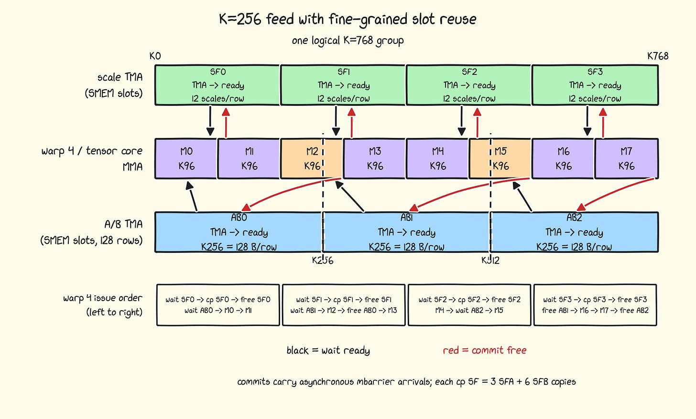
这个图看起来比上一个复杂一些。但核心流程很简单：等待你需要的资源，用完后立即释放。
MMA等待A/B和缩放因子A/B，一旦MMA完成，就可以释放相应的缓冲区。但由于缓冲区大小不同，顺序必须手动安排。由于我们有固定的K=768，我们可以手动展开一切，并尽可能快地释放/排队请求，而没有任何开销。
这张图是对屏障细节的最佳解释：如果你感兴趣，我建议仔细看看。
例如，当MMA5完成时，我们可以立即释放AB1。然而，我们选择先发出SF3。事实证明，先发出cp是很重要的：它打破了cp和mma的串行化。一个自然而然的问题是：为什么不用另一个warp来做cp并添加更多的mbarriers？在很多情况下，我们没有额外的warp（由于CLC），而且在FP4机制下mbarriers也有一定的开销。
TMA与MMA的分区边界不再一致，因此MMA2需要同时读取AB0和AB1的部分内容。
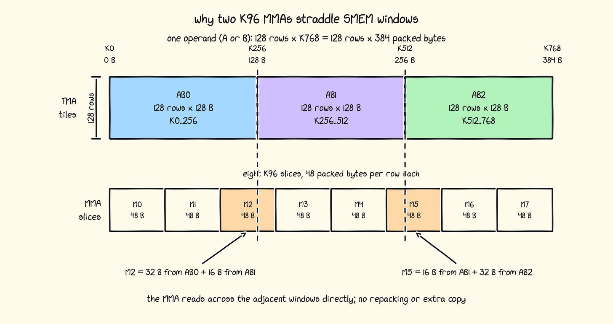
上面一行是TMA写入操作数的方式；下面一行是张量核心读取完全相同字节的方式。两个橙色MMA直接跨越到下一个128字节窗口。
PTX专门为这种情况提供了一种描述符模式：针对48字节K维度的绝对地址模式。这可以在tcgen05.mma调用的指令描述符中指定。
desc =
encode(AB0 + 96) // first 32 B begin in AB0
| encode(AB1) << 16 // final 16 B comes from AB1
| FIXED_K96_SW128_BITS;这使性能从5.806 PFLOP/s提升到6.676 PFLOP/s，提升了15.0%！
1,024 B barrier header + padding
6 x 16,384 B A ring
6 x 16,384 B B ring
7 x 1,536 B A scale-factor ring
512 B alignment padding
7 x 3,072 B B scale-factor ring
----------------
230,400 B total per SM每个CTA使用232,448可用字节中的230,400字节：99.1%。
六个A/B阶段和七个缩放阶段使TMA保持领先于MMA warp。 减少一个A/B阶段会损失12% 性能；减少一个缩放阶段会损失1.2% 性能。
我们的加载和MMA现在已经很好地并行化了。但MMA warp仍然需要等待epilogue清空其TMEM输出缓冲区，然后才能开始处理下一个tile。理想情况下，我们希望存储2个这样的缓冲区，这样张量核心线程就无需等待consumer warp读取并释放它，而是立即开始下一个MMA循环。
但如果这样做，就没有剩余空间来存放缩放因子（它们也需要放在 TMEM中）：
2×256个累加器列 + 36个缩放列 = 548 > 512
解决方案是将两个输出tile重叠36列（548 - 512）。因此 MMA只需要等待消费者排空重叠边缘 而不是旧缓冲区的全部256列。我们延迟同步 而不是完全移除它。
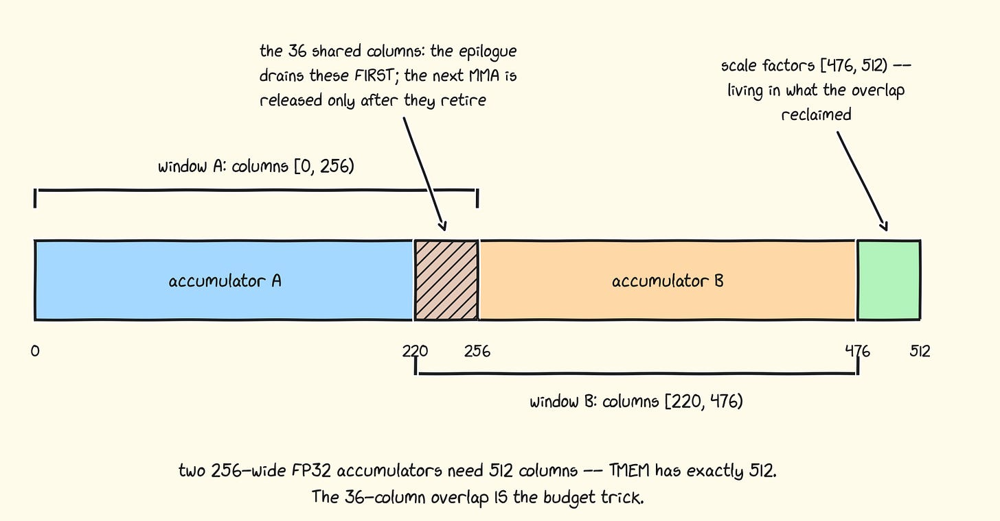
Warp 0-3处理此排空（每行一个线程）。
if (warp_id< 4) {
wait(acc_ready);
for (int i = 0; i < 8; ++i) {
int band = (d_parity == 0) ? 7 - i : i; // overlap first
float out[32];
tmem_load_x32(tmem_base + 32 * band, out);
if (i == 1) {
wait_for_tmem_loads();
arrive(acc_free);
}
store_fp16(out, output_row, 32 * band);
}
}从TMEM到寄存器的加载只有32列宽。需要时我们可以加载更多，但这已足以达到最佳性能。我们只使用32个寄存器，这相当廉价，且不需要Hopper所需的定制寄存器分配。
有一件事没成功：我们只需要在读取36列后发出acc_free信号，但我们是在64列之后才发出。我尝试将加载完全展开为多种尺寸，并在36列时提前释放，但速度慢了0.5%。所以我保留了更简单的版本。
最后再看一次完整流程会很有帮助。输出tile仍是256×256，但A/B阶段填满其完整的128字节SMEM窗口，TMEM现在同时承载两个输出tile：
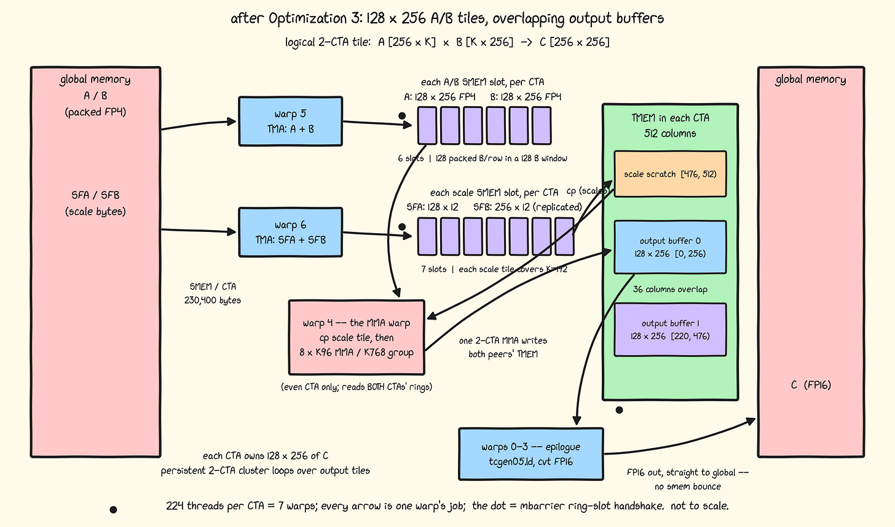
这将内核从6.676提升到6.822 PFLOP/s，提升了2.2%。
至此，我们已经从优化进入了微优化阶段。
从Blackwell开始，CUDA支持256位加载/存储：基本上int4现在有了更强大的变体：int8。它实际上叫做longlong4_32a。我更倾向于直接使用PTX指令：
"st.global.v8.b32 [%0], "
"{%1, %2, %3, %4, %5, %6, %7, %8};"这将内核从6.822提升到7.331 PFLOP/s，提升了7.5%：而且我们已经达到cuBLAS的100.3%！
存储宽度只是指令的一半。相同的存储还携带 输出缓存策略：
st.global.L1::no_allocate.L2::evict_first.v8.b32 [%0],
{%1, %2, %3, %4, %5, %6, %7, %8};输出只写入一次，且此内核不会再次读取。 L1::no_allocate阻止这些存储分配L1缓存行， 否则它们会与输入流水线竞争。数据仍然经过 L2，因此L2::evict_first使这些缓存行成为首个被驱逐的候选， 为可复用输入留出更多空间。
这让我们从7.331提升到7.418 PFLOP/s，提升了1.2%。
- __global__ __cluster_dims__(2, 1, 1) __launch_bounds__(224, 1) kernel(...) {}
这就是我们启动内核的方式。Cluster dims告诉编译器集群大小，launch bounds告诉它内核最多使用224个线程。不过，现在出现了一个新的性能提示：
+ __global__ __block_size__((224, 1, 1)) __cluster_dims__(2, 1, 1) + __launch_bounds__(224, 1) kernel(...) {}
`__block_size__(224)` 表示恰好224个线程。这在PTX指南中被称为reqntid性能指令。
当ptxas无法证明完整的warp能到达每个集合点时，它会插入收敛保护。不过，新的性能指令解决了这个问题，减少了BSSY/BSYNC SASS指令对，并将寄存器占用从62个降到52个！
在重建链中，这只是0.3% 的吞吐提升，从7.418到 7.441 PFLOP/s，但生成代码的清理效果是真实的。
主循环自然地每K=768重复一次：三个K=256的A/B阶段、四个 K=192 scale阶段和八个K=96的MMA全部对齐。K=8192在十个完整组后留下一个 512元素的尾部。基线仍然运行一个完整的 尾部组，因此其最后八个MMA如下所示：
MMA 0 1 2 3 4 5 6 7 96 96 96 96 96 32 real + 64 zero all zero
这不是主机端的额外填充。TMA的越界填充提供了 零，但张量核仍然会花时间进行乘法运算。
为了解决这个问题，我保持快速K=768循环不变，并添加了一个显式的尾部组：
int full_groups = K / 768;
int remainder = K % 768;
run_k768_groups(full_groups);
if (remainder != 0) {
int tail_mmas = ceil_div(remainder, 96);
run_tail_group(tail_mmas);
}其他warp跳过相同的环形条目和屏障；否则在这里很容易造成死锁。
K=8192内核现在计算K=8256而非K=8448。这将性能从7.441 PFLOP/s提升到7.493 PFLOP/s，提升了0.7%。
精确输入不再填充到K=768，但其最后的张量核心指令仍然是K=96。对于K=8192，我们可以通过混合K96和K64指令来实现精确：
Full-group tail: 11 x 768 = 8448
K96-only tail: 10 x 768 + 6 x 96 = 8256
folded K64 tail: 10 x 768 + 4 x 96 + 2 x 64 = 8192这种特化将发布审计从7.493提升到7.564 PFLOP/s， 又提升了0.9%。
此时，我们直接针对8192 x 8192 x 8192形状手写优化。现在，让我们转向针对GPU手写优化。
我们的基线调度器以简单的行主序遍历输出网格。这对其中一个矩阵获得非常好的L2缓存命中，但对另一个矩阵没有。在我之前的H100工作日志中，我们将邻近的tile分组为pockets，以改善两个矩阵的L2重用：
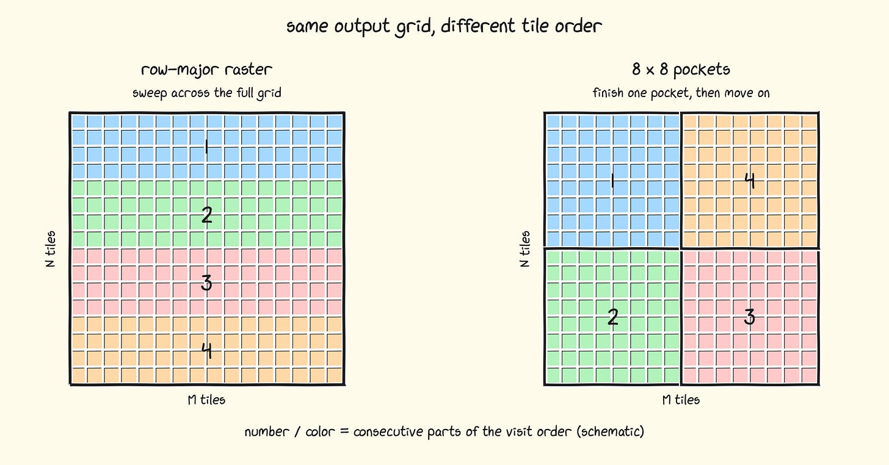
相同颜色的tile在所有可用SM上同时运行。这意味着它们可以享受读取所需A/B矩阵相同部分的缓存好处。
让我们看看这个想法表现如何：
Tile order PFLOP/s
----------- -------
Row major 7.570
8x8 pockets 7.508我们的理论是合理的，但不太清楚为什么这会表现不佳。为了解决这个问题，我们首先需要了解有关L2缓存的一些隐藏硬件细节。我们将建立一个理论，并用它让8x8 pockets在实践中发挥作用。
GB300是同一个package中的两个die。其152个SM分成两组，每组分别靠近128 MB L2的大约一半。
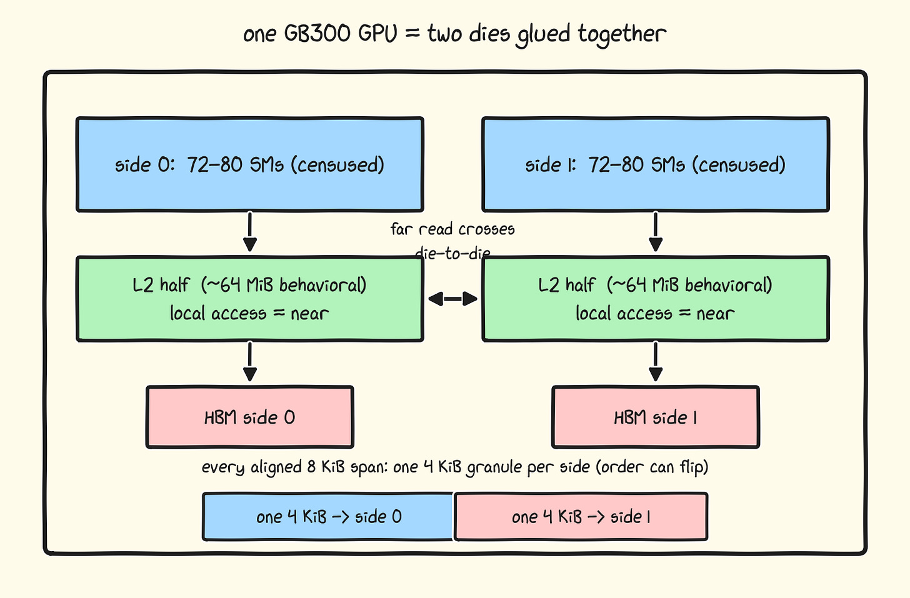
这里 “side” 有两种不同的含义：
每个物理地址都有一个由address hash选择的home side。
每个SM都有一个由包含该SM的die决定的near side。
这些标签无需匹配。如果side 0上的SM请求一个home side为side 1的line，cold read会跨越die-to-die链路。
Requester relative to the line's home side atomicAdd Latency
------------------------------------------ -----------------
Near 148 ns
Far 344 ns为了暴露hop，我使用了一条依赖的atomicAdd链：每个返回值 馈送到下一个地址，不留下任何memory-level parallelism来隐藏 延迟。一次远程round trip慢 ~2.3x。
然而，这并不会直接让GEMM更快，因为我们的TMA queue让许多请求保持in flight，并且很好地隐藏了hop。更有趣的是，这如何直接影响有效L2 cache大小。
分区L2 cache的想法并不广为人知，但互联网上有足够多的碎片可以把它拼凑起来。NVIDIA首先在A100白皮书中描述了它， Citadel对其进行了microbenchmark，我在上次博客中简要提到过，而Aroun实际上在QuickRunCUDA中为Blackwell做了地址计算：我已将其移植。
地址映射如下：
side = parity(physical_address & 0x1EF000) ^ slab_phase;
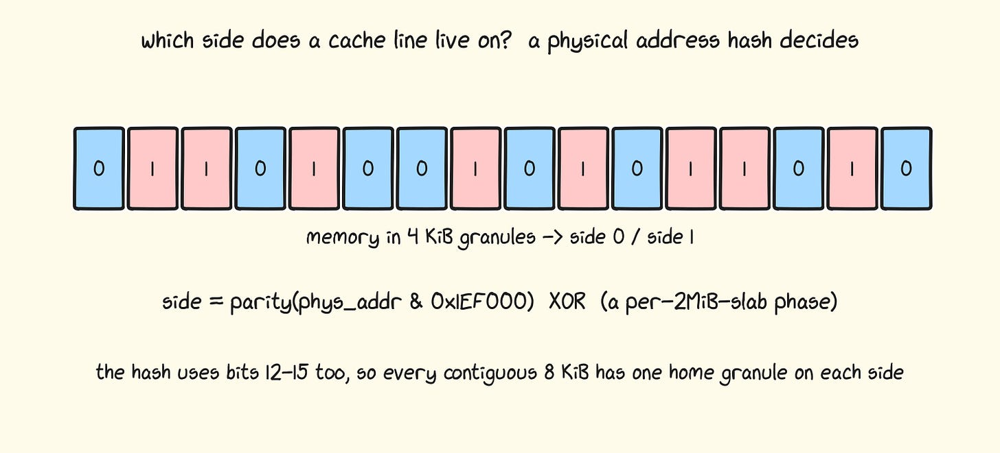
每4KB内存段将完全落在side 0或side 1上。每个对齐的8KB跨度也包含每个side的一个段。该映射在2MB slab内是确定性的，但不同的2MB slab可能具有互补映射（即近侧和远侧翻转）。
对于GEMM，我们不需要深入探究具体哪个映射到哪里，只需将SM分成两组，以便它们可以独占使用自己“专属”的L2缓存空间。这种分组可以通过检查同一地址上的内存延迟来找到。
首先，一个重要细节：对于152个SM，你可能期望每个GPU在L2侧上按76:76分割。有些确实如此，但分割比例并不固定。以下是我见过的比例：
SMs on side 0 / side 1 Two-CTA clusters
---------------------- ----------------
76 / 76 38 / 38
72 / 80 36 / 40
74 / 78 37 / 39集群中的2个SM始终落在同一侧，但并非平均分割。所以每个GPU都略有不同，甚至可能在其中看到不同的“有效”L2缓存大小。功耗问题并不是GPU性能差异的唯一原因！
失败的8x8实验准确告诉我们缺少什么。局部排序可以获得更大的L2缓存命中，但如果没有协调，它们可能只是相互颠簸。有两个正交因素：
所有权决定重用发生的位置。一个SM侧获得每次重复。
对A tile的读取。
顺序决定何时发生复用。在每一侧内，8x8 pockets使
下一次使用保持在附近。
对于一个输出tile，
C[m,n] = sum_k A[m,k] * B[n,k]
固定m跨N复用A[m,:] 和SFA。因此我将每个 输出行m分配给一个请求方侧。B和SFB保持共享，因为每个N tile被两侧的M行所需。
这并不会自动将A放入一个物理L2半区。每个A row的home address仍然大致50/50，因此一些first touch会跨越链路。改变的是谁回来：只有该row的owner side的clusters会重新读取它。一个冷line可能是远程的，但其后续的N复用保持在单个requester群体内，而不是在两个半区中建立有效的驻留。
当规模为8192的立方时，输出网格是32 x 32 tiles。在CPU侧，我们预先计算每个cluster的循环次数，将整个M行分配给两个side pools，然后以8x8 pockets遍历每个pool。我们将这个调度存储在route table中，每个SM可以查询它来知道要计算哪个tile。该表只有几KB，每个256x 256 tile对应一个条目。
Strategy PFLOP/s
-------------------------- -------
Row-major 7.570
8x8 pockets / Hilbert 7.508
8x8 pockets + L2 ownership 7.646每种形状最适合的调度方案略有不同。
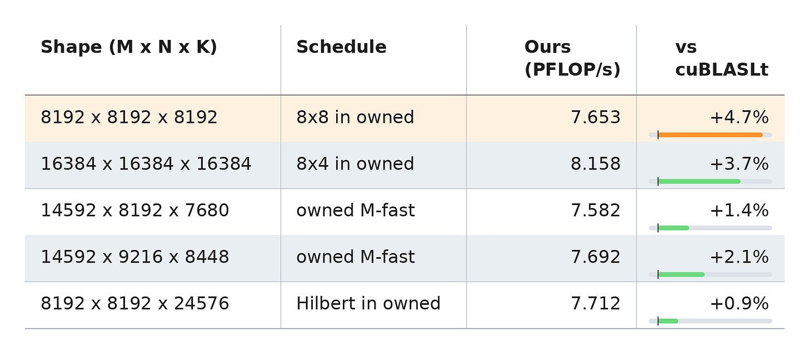
这并不意味着我们在每种形状上都比cuBLAS更快。（事实上，对于几种形状，我的代码并未超越它。）但这凸显了为每种形状“编译”你的kernel的可能性。
`redux.sync` 指令可以稍微绕一下，用它提示编译器：调度信息也可以存储在统一寄存器中。
uint32_t tile = route_table[table_offset + t];
uint32_t uniform_tile;
asm("redux.sync.min.u32 %0, %1, 0xffffffff;"
: "=r"(uniform_tile) : "r"(tile));路由解码和地址运算可以保持在统一路径上，这种方式始终更优。这对性能的影响可忽略不计，但能保持SASS的整洁。我添加此操作仅因为它极难被发现，希望PTX能内置更好的编译器提示。
for (...) kernel(A, B, C);
轮换输入。每次启动使用不同的A和B副本，因此kernel无法在L2中看到自己之前的输入。
多轮。我们的kernel与cuBLASLt交替进行五轮，并轮换每次先运行的一方。每轮中连续启动25个kernel，输入轮换，取它们的均值。
冷却GPU。每个定时arm有至少八秒的冷却时间。目标是让GPU在下一轮之前达到冷却状态。如果未达到（空闲GPU时钟尚未恢复到初始状态），我们继续休眠并轮询，直到达到。
内核基准测试没有唯一正确的方法。功耗受限的内核，数值总会有些波动。只需找到一种方法，通过降低每次测量的方差，让你对增量改进有信心。这里我将展示4种对我们的内核进行基准测试的方法，每种方法都展示出对cuBLAS的不同优势：
Method Ours (PFLOP/s) cuBLASLt (PFLOP/s) Ratio
--------------------------- -------------- ------------------ -------
Current protocol 7.653 7.307 1.0473x
Triton-style with L2 clears 7.179 6.711 1.0698x
Clock locked to 1305 MHz 6.734 6.245 1.0783x
Sustained 60-second blocks 6.424 6.181 1.0392x当前这一行是全文通篇使用的协议。持续测试给出的优势最小，而锁定时钟则暴露出最大的每周期差异。我将当前协议用于标题数字，因为我觉得它更能代表真实工作负载。
我们从零编写了一个NVFP4矩阵乘法内核，比cuBLAS快4.7% ： 这是我所知的最佳基线。也许最有趣的优化是最后一个，因为它利用Nvidia GPU中L2缓存的内部细节来开发更快的调度算法。 AMD GPU也有这个特性 ： 但他们对此非常公开，并且经常在设计时考虑到这一点。
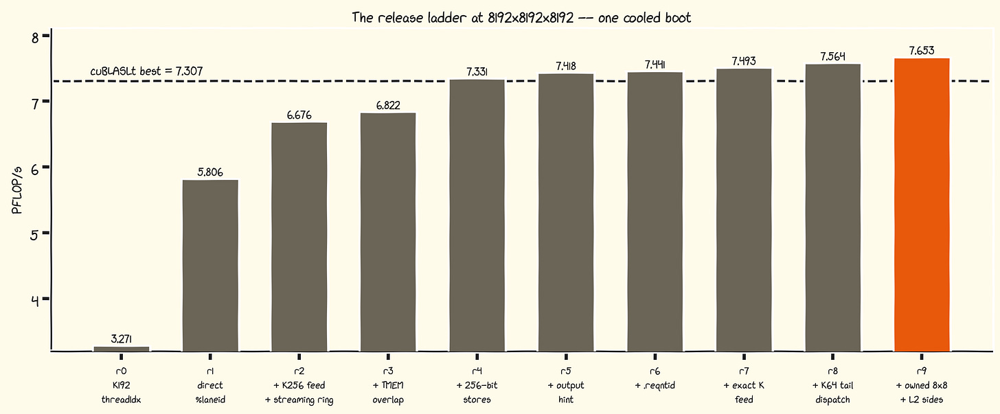
尽管我很想写更多文章，但沉迷于算法的时代已经结束。未来，我将更多分享如何最好地使用AI agents（智能体）来优化GPU性能。
Claude Code
PTX指南
我的H100矩阵乘法工作日志
gau-nernst的tcgen05笔记
ademeure的QuickRunCUDA侧感知实验
Daniel的MXFP8博客
Paul Chan在BF16上超越cuBLAS
Ali和Modular团队超越cuBLAS
感谢阅读Pranjal的Substack！免费订阅以接收新文章并支持我的工作。
参考：https://cudaforfun.substack.com/p/outperforming-cublas-on-nvfp4